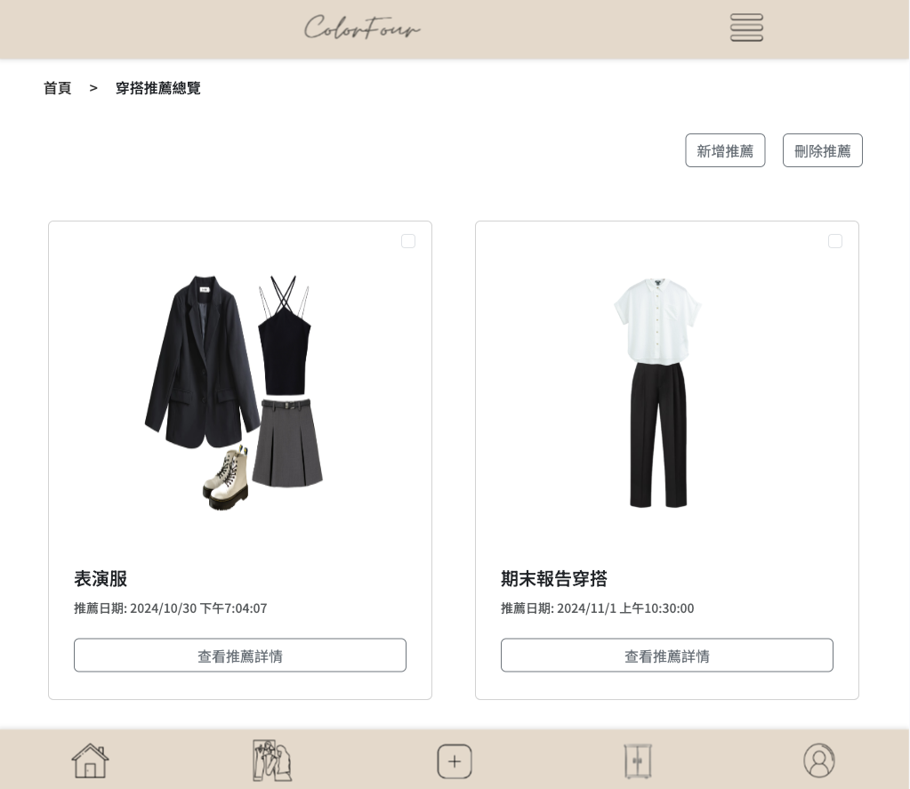

穿搭推薦介紹
智慧推薦：
結合色彩分析及智慧衣櫃功能，根據使用者的位置、天氣和場合需求，快速提供適合的穿搭方案，節省時間與精力。
偏好推薦：
使用者可根據當天的心情選擇自己想要穿的服飾類型或
排除不想穿的服飾類型，提供相應的推薦（此為付費版會員功能）

穿搭推薦總覽畫面
呈現穿搭推薦歷史紀錄，以及新增、刪除推薦的按鈕。
點選「查看推薦詳情」可以看到該次推薦的詳細內容。
穿搭推薦詳細頁面
點選「查看推薦詳情」，即可更清楚的看到推薦穿搭的圖片、標題、推薦過程選擇的標籤、推薦日期以及編輯、將穿搭新增至貼文及回總覽頁面的按鈕。

穿搭推薦流程
(1) 輸入標題、地點，送出後會自動抓取天氣資訊。
(2) 場合/目的、氣色：依照使用者的智慧衣櫃的標籤客製化呈現，點選即可加入篩選。
(3) 想要穿搭的服飾種類為付費會員內容，點選即可加入篩選。
穿搭推薦結果
(1) 根據選項，列出三項推薦結果。
(2) 選擇想要的穿搭結果會有紅框。
(3) 畫面最下方點選送出即可儲存這次的穿搭推薦結果。並在穿搭推薦總覽呈現。